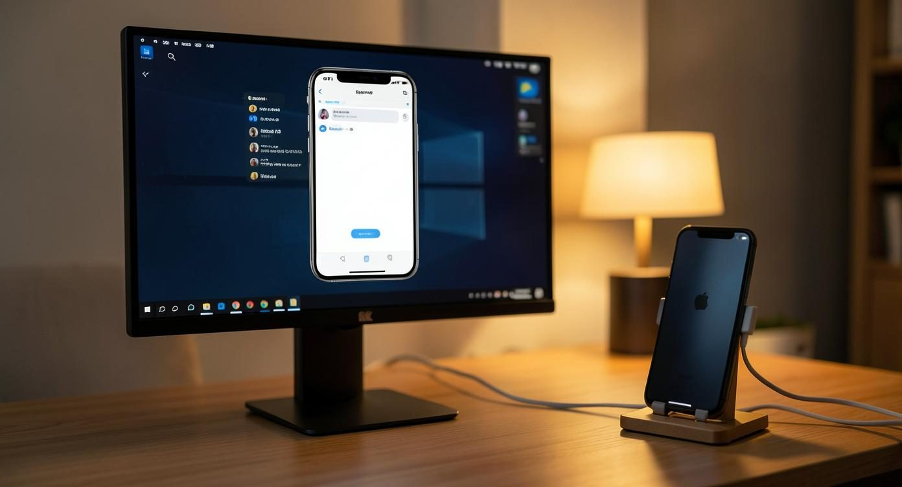
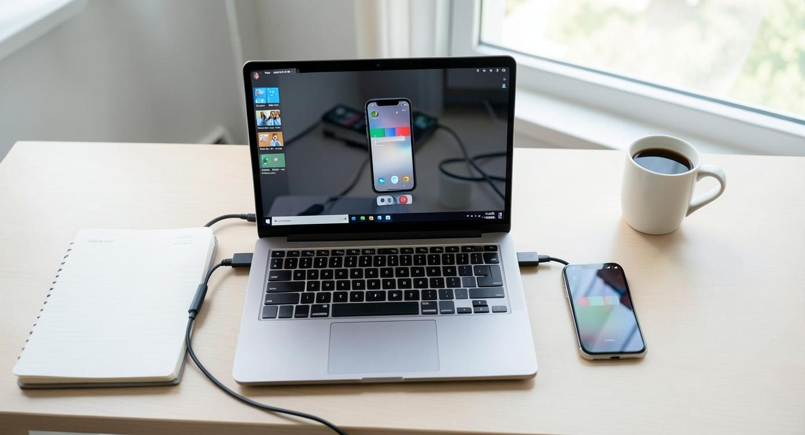
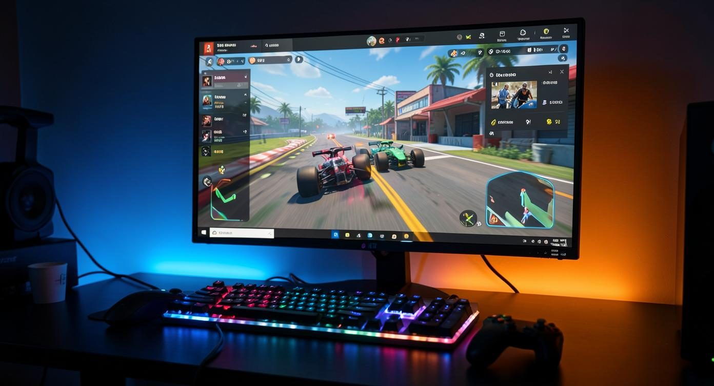
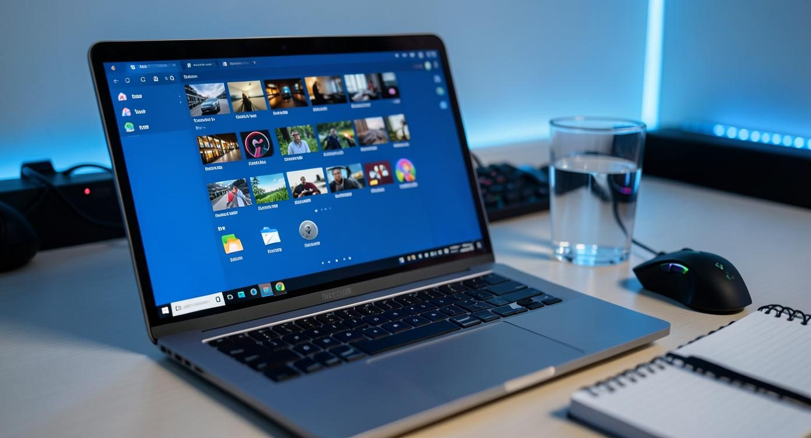

Windows 11 Me Android Kaise Use Kare: 4 Tarike, Full Setup

Windows 11 में Android कैसे use करें — यह सवाल आज भी उतना ही ज़रूरी है जितना 2021 में था, बस इसका जवाब बदल चुका है। पहले Microsoft का अपना Windows Subsystem for Android (WSA) था, जिसे Amazon Appstore के साथ Microsoft Store से सीधे इंस्टॉल किया जा सकता था। मार्च 2025 में वह रास्ता बंद हो गया, और आज जो भी पुराना YouTube वीडियो "Store से Amazon Appstore इंस्टॉल करो" कहता है, वह पुराना पड़ चुका है।
अब Windows 11 पर Android चलाने के चार असली तरीके बचे हैं — Phone Link से अपने ही फोन के ऐप्स PC पर खोलना, Google Play Games on PC से Android गेम खेलना, BlueStacks या LDPlayer जैसे emulator से पूरा Android डिवाइस बनाना, और Android Studio के emulator से डेवलपर वाला setup करना। इस पोस्ट में चारों का पूरा क्रम है — किसके लिए कौन सा सही है, कितनी RAM और स्टोरेज लगेगी, कहाँ लोग अटकते हैं, और वे errors जिनका हल ढूँढ़ने में मेरी खुद एक शाम गई थी।
छोटा जवाब: अगर आपको अपने ही फोन के WhatsApp, Instagram, Paytm जैसे ऐप्स बड़ी स्क्रीन पर चलाने हैं, तो Windows 11 के Phone Link में Apps सेक्शन खोलें और फोन जोड़ लें — यह सबसे हल्का और सुरक्षित रास्ता है। सिर्फ Android गेम खेलने हैं तो Google Play Games on PC इंस्टॉल करें। अगर ऐसा Android चाहिए जो PC पर ही इंस्टॉल हो, Play Store से कोई भी ऐप ले सके और फोन की ज़रूरत न पड़े, तो BlueStacks 5 या LDPlayer लगाएँ। और अगर आप ऐप बना रहे हैं या APK टेस्ट कर रहे हैं, तो Android Studio का emulator सबसे साफ विकल्प है।
Windows 11 पर Android के चार रास्ते, एक नज़र में
शुरू करने से पहले यह समझ लेना ज़रूरी है कि हर तरीका एक जैसा क्यों नहीं है। इनमें से कोई भी Android को सचमुच Windows का हिस्सा नहीं बनाता — हर तरीका अलग-अलग तरीके से उसी काम को अंजाम देता है। जब आपको पता होगा कि अंदर क्या हो रहा है, तो धीमा चलने या ऐप क्रैश होने पर आप खुद समझ जाएँगे कि गड़बड़ कहाँ है।
| तरीका | असल में क्या होता है | किसके लिए सही | PC पर लोड |
|---|---|---|---|
| Phone Link (Apps) | फोन का ऐप फोन पर ही चलता है, PC सिर्फ स्क्रीन दिखाता है | अपने ही ऐप्स बड़ी स्क्रीन पर चलाना | बहुत कम |
| Google Play Games on PC | Google का अपना Android environment, सिर्फ गेम के लिए | Android गेम keyboard-mouse पर खेलना | मध्यम |
| BlueStacks / LDPlayer | PC के अंदर पूरा virtual Android डिवाइस | कोई भी Android ऐप, फोन की ज़रूरत नहीं | ज़्यादा |
| Android Studio emulator | डेवलपर के लिए official virtual डिवाइस | ऐप टेस्टिंग, APK डिबगिंग | सबसे ज़्यादा |
ध्यान दें, इनमें से किसी में भी आपका Windows 11 "Android फोन" नहीं बन जाता। न ही कोई ऐप Windows के Start menu में हमेशा के लिए बैठ जाता है। जो चल रहा है, वह एक अलग माहौल है — कभी फोन के अंदर, कभी PC के अंदर बना virtual डिवाइस। यही वजह है कि हर तरीके की सीमाएँ भी अलग होती हैं।
पहले यह सच जान लें: WSA अब official रास्ता नहीं है
Windows 11 आते समय Microsoft ने Windows Subsystem for Android को सबसे बड़ा फीचर बताया था। उसके ज़रिए Microsoft Store से Amazon Appstore इंस्टॉल होता था और उसी से चुने हुए Android ऐप्स Windows पर चलते थे। लेकिन Microsoft ने इस प्रोजेक्ट को आगे नहीं बढ़ाया। 5 मार्च 2025 से WSA और Amazon Appstore दोनों Microsoft Store से हटा दिए गए।
इसका मतलब साफ है — नए PC पर यह रास्ता अब उपलब्ध नहीं है। जिन लोगों ने पहले इंस्टॉल कर लिया था, उनके लिए भी नए फीचर या सपोर्ट नहीं आ रहे। इसलिए अगर कहीं आपको "Settings में जाकर Amazon Appstore ढूँढें" जैसी सलाह दिखे, तो समझ लें कि वह 2024 तक की जानकारी है। आगे जो तरीके बताए हैं, वे सब 2026 में काम करते हैं और उन्हें कोई Microsoft अपडेट बंद नहीं कर सकता।
एक बात और — WSA का कोड अब GitHub पर open source है। कुछ community builds (जैसे WSABuilds) उसे दोबारा Windows 11 पर चलाने की कोशिश करते हैं। यह तरीका नीचे अलग से बताया है, पर इसे "advanced" मानकर चलें, क्योंकि Windows के बड़े अपडेट के बाद ऐसे builds टूट सकते हैं।
तरीका 1: Phone Link से अपने फोन के Android ऐप्स PC पर चलाएँ
यह सबसे कम मेहनत वाला और सबसे सुरक्षित तरीका है। इसमें कोई emulator नहीं बनता, कोई APK डाउनलोड नहीं होता और कोई नया Google अकाउंट नहीं बनाना पड़ता। आपका ऐप असल में आपके फोन पर ही चलता रहता है, और Windows सिर्फ उसकी स्क्रीन को अपनी विंडो में दिखाता है। Keyboard और mouse के इनपुट फोन तक पहुँच जाते हैं, इसलिए टाइपिंग और क्लिक दोनों काम करते हैं।
क्या चाहिए
- Windows 11 वाला PC (Windows 10 के अक्टूबर 2022 अपडेट के बाद का वर्ज़न भी चलेगा), एक ही Wi-Fi नेटवर्क पर।
- Android 10 या उससे नया फोन, जिसमें Link to Windows पहले से इंस्टॉल हो या Play Store से लगाया जा सके।
- फोन और PC दोनों पर Microsoft अकाउंट से साइन-इन।
- कम से कम 8 GB RAM अगर आप एक साथ कई ऐप्स खोलना चाहते हैं।
Step-by-step setup
- PC पर Start दबाएँ, Phone Link टाइप करें और ऐप खोलें। अगर न मिले तो Microsoft Store से "Phone Link" इंस्टॉल कर लें।
- Windows 11 के नए वर्ज़न में यही काम Settings → Bluetooth & devices → Mobile devices → Add device से भी हो जाता है। दोनों जगह से एक ही चीज़ जुड़ती है।
- स्क्रीन पर दिखे QR कोड को फोन से स्कैन करें। फोन में Link to Windows ऐप खुलेगा — वहाँ माँगी गई अनुमतियाँ (contacts, photos, notifications) दे दें।
- दोनों तरफ एक ही Microsoft अकाउंट चुनें और PIN/पासवर्ड से पुष्टि करें।
- जुड़ने के बाद Phone Link में बाएँ मेन्यू में Apps पर क्लिक करें। पहली बार में यह सेक्शन setup माँगेगा — फोन पर एक छोटी अनुमति का popup आएगा, उसे Allow करें।
- अब आपके फोन के ऐप्स की सूची दिखेगी। किसी भी ऐप पर क्लिक करें और वह PC की अलग विंडो में खुल जाएगा — बिल्कुल वैसे ही जैसे कोई Windows ऐप खुलता है।
एक छोटी आदत जो बहुत फर्क डालती है — जिस ऐप को रोज़ इस्तेमाल करते हैं, उसे taskbar पर pin कर दें। Phone Link उसे Start menu में भी जोड़ सकता है। इसके बाद हर बार सूची में जाने की ज़रूरत नहीं पड़ती।
किन फोन पर यह सुविधा चलती है
यह सबसे ज़रूरी बात है, क्योंकि बहुत लोग यहीं निराश होते हैं। Phone Link का Apps सेक्शन हर Android फोन पर नहीं चलता। यह उन डिवाइस पर काम करता है जिनमें Link to Windows पहले से लगा होता है — जैसे Samsung Galaxy (S, A, Z और Tab सीरीज़ के कई मॉडल), HONOR Magic सीरीज़, OPPO Find और Reno, OnePlus, Realme, ASUS ROG Phone, vivo X/V/T सीरीज़, iQOO और Xiaomi के कुछ मॉडल।
साफ शब्दों में — stock Android वाले Pixel फोन पर यह सुविधा आज भी नहीं है। अगर आपका फोन इस सूची में नहीं है, तो नीचे दिए emulator वाले तरीके आपके लिए हैं। Microsoft की साइट पर "Supported devices for Phone Link experiences" पेज पर पूरी सूची मौजूद रहती है और हर कुछ महीने में उसमें नए मॉडल जुड़ते रहते हैं।
एक साथ कई ऐप्स खोलना
अगर फोन Android 11 या नया है और वह चुनिंदा Samsung या HONOR डिवाइस में से है, तो आप दो-तीन Android ऐप्स एक साथ खुली विंडो में चला सकते हैं। बाकी डिवाइस पर एक समय में एक ही ऐप खुलेगा। कई ऐप्स के लिए Microsoft कम से कम 8 GB RAM की सलाह देता है, क्योंकि हर विंडो का अपना रेंडरिंग खर्च होता है।

इस तरीके की सीमाएँ
पहली सीमा — फोन पास और चालू रहना चाहिए। अगर फोन की स्क्रीन बंद है या वह दूसरे Wi-Fi पर चला गया, तो ऐप विंडो भी रुक जाएगी। दूसरी सीमा — कुछ ऐप्स अपनी स्क्रीन को सुरक्षा के लिए ब्लैक कर देते हैं, इसलिए बैंकिंग और DRM वाले वीडियो ऐप्स में आपको काली स्क्रीन दिख सकती है; यह खराबी नहीं, ऐप का डिज़ाइन है। तीसरी सीमा — गेम खेलने में थोड़ी देरी (latency) महसूस होगी, क्योंकि हर फ्रेम पहले फोन बनाता है और फिर PC तक आता है।
तरीका 2: Google Play Games on PC से Android गेम खेलें
अगर आपका मकसद सिर्फ गेम है, तो यह सबसे साफ रास्ता है। Google का यह ऐप Windows पर एक हल्का Android वातावरण बनाता है और उसमें सिर्फ वे गेम चलाते हैं जिन्हें Google ने इस प्लेटफॉर्म के लिए तैयार किया है। फायदा यह है कि गेम keyboard, mouse और game controller के लिए खुद को ढाल लेते हैं — मोबाइल की तरह उँगली से स्क्रीन दबाने की ज़रूरत नहीं पड़ती।
क्या चाहिए
- Windows 10 (version 2004) या Windows 11, 64-bit।
- कम से कम 10 GB खाली जगह वाली SSD।
- 4 physical CPU cores और 8 GB RAM।
- Intel UHD Graphics 630 या उससे बेहतर GPU।
- Hardware virtualization चालू (BIOS में VT-x या AMD-V)।
- Windows का administrator अकाउंट।
इंस्टॉल कैसे करें
- ब्राउज़र में play.google.com/googleplaygames खोलें और Download पर क्लिक करें।
- डाउनलोड हुई फाइल चलाएँ। अगर PC requirements पूरी नहीं होंगी तो इंस्टॉलर खुद मना कर देगा — यह अच्छी बात है, क्योंकि बाद में गेम चलने की उम्मीद नहीं रखनी पड़ती।
- अगर Windows Hypervisor Platform बंद है, तो इंस्टॉलर इसे चालू करने का सुझाव देगा। उसे स्वीकार करें और PC restart करें।
- ऐप खोलें, अपने Google अकाउंट से साइन-इन करें और जो गेम खेलना है उसे लाइब्रेरी में ढूँढकर इंस्टॉल करें।
- पहली बार गेम खुलने पर control settings देख लें — keyboard mapping और graphics quality वहीं बदल सकते हैं।
एक ईमानदार बात — यह सुविधा हर देश में एक साथ नहीं आई है। अगर इंस्टॉलर या ऐप कहे कि "यह आपके देश में उपलब्ध नहीं है", तो इसका मतलब यही है कि Google ने वह क्षेत्र अभी सूची में नहीं जोड़ा। VPN से ज़बरदस्ती करने की कोशिश न करें — अकाउंट और payment से जुड़ी दिक्कतें बन सकती हैं। साथ ही यहाँ सिर्फ चुने हुए गेम मिलते हैं, Play Store का पूरा कैटलॉग नहीं।

तरीका 3: BlueStacks, LDPlayer या MEmu — PC के अंदर पूरा Android
यह वह तरीका है जिसे ज़्यादातर लोग "Windows 11 में Android" कहकर खोजते हैं। इसमें आपके PC के अंदर एक virtual Android डिवाइस बनता है — अपनी स्क्रीन, अपना Play Store और अपनी स्टोरेज के साथ। कोई फोन पास रखने की ज़रूरत नहीं। आप वही ऐप्स इंस्टॉल कर सकते हैं जो फोन पर करते हैं, और चाहें तो उसी समय फोन पर भी चलाते रह सकते हैं।
कौन सा emulator चुनें
- BlueStacks 5: सबसे पॉलिश किया हुआ अनुभव, आसान setup, नए यूज़र के लिए सबसे कम सिरदर्द। कमी यह है कि इसमें ads और background services रहते हैं, और कुछ देशों में यह officially उपलब्ध नहीं है।
- LDPlayer 9: हल्का और गेमिंग के लिए तेज़। कम RAM वाले लैपटॉप पर BlueStacks से बेहतर चलता है। इंटरफेस थोड़ा कम साफ है।
- MEmu: पुराने हार्डवेयर पर काम आता है और इसमें कई Android वर्ज़न के instance बन जाते हैं।
- MuMu Player: नया Android वर्ज़न चाहिए तो अच्छा विकल्प, गेमिंग पर फोकस।
मेरी राय में पहली बार करने वाले BlueStacks 5 से शुरू करें। जब आपको समझ आ जाए कि क्या चाहिए, तब ज़रूरत पड़े तो LDPlayer पर जाएँ। एक से ज़्यादा emulator एक साथ इंस्टॉल करके मत चलाइए — दोनों अपनी-अपनी virtual मशीन चालू रखते हैं और RAM जल्दी खत्म हो जाती है।
इंस्टॉल और Play Store setup
- emulator की official साइट से इंस्टॉलर डाउनलोड करें। किसी "modded" या "premium unlocked" वर्ज़न से बचें — उनमें adware मिलने की खबरें आती रहती हैं।
- इंस्टॉलर चलाएँ। अगर आपके PC पर Hyper-V चालू है, तो BlueStacks का Hyper-V वाला build चुनें, वरना वह शुरू ही नहीं होगा और "virtualization" वाली error देगा।
- पहली बार खुलने पर भाषा और Google Play Services की शर्तें स्वीकार करें।
- Play Store खोलें और अपने Google अकाउंट से साइन-इन करें। यहाँ एक अलग अकाउंट इस्तेमाल करना बेहतर है, खासकर अगर आप बहुत सारे ऐप्स आज़माते हैं।
- Settings में जाकर CPU cores, RAM और resolution सेट करें — नीचे इसका सही तरीका दिया है।

Emulator को तेज़ चलाने की settings
डिफ़ॉल्ट settings अक्सर बहुत कम संसाधन देती हैं, इसलिए शुरुआत में सब कुछ धीमा लगता है। इन चार चीज़ों को बदलने से अनुभव लगभग दोगुना बेहतर हो जाता है:
- CPU cores: 4 चुनें (फोन में 8 cores होते हैं, पर PC को भी चलना है — सारे cores emulator को देने से Windows ही अटकने लगेगा)।
- RAM: 4 GB दें। 8 GB वाले PC पर 3 GB से ज़्यादा न दें, वरना Windows के लिए जगह नहीं बचेगी।
- Graphics renderer: पहले OpenGL आज़माएँ, अगर तस्वीर टूटे या काली स्क्रीन आए तो DirectX पर बदलें।
- Resolution और DPI: 1920×1080 और 240 DPI ज़्यादातर ऐप्स के लिए ठीक है। 4K माँगने से बिना फायदा load बढ़ता है।
साथ में एक ज़रूरी सलाह — emulator की फाइलें SSD पर रखें। हार्ड डिस्क (HDD) पर Android का boot ही दो-तीन मिनट ले लेता है, जबकि SSD पर 20–30 सेकंड में खुल जाता है।
किन कामों के लिए emulator ठीक नहीं है
Banking, UPI और कुछ सरकारी ऐप्स emulator पर चलने से मना कर देते हैं, क्योंकि वे rooted या virtual माहौल पहचान लेते हैं। यह उनकी सुरक्षा का हिस्सा है, इसे तोड़ने की कोशिश न करें। इसी तरह OTP वाले ऐप्स और डिजिटल सिग्नेचर वाले टूल emulator पर भरोसेमंद नहीं रहते। इन कामों के लिए फोन ही इस्तेमाल करें — यह सिर्फ सुविधा का फर्क है, जोखिम लेने की ज़रूरत नहीं।
तरीका 4: Android Studio emulator (डेवलपर वाला रास्ता)
अगर आप खुद Android ऐप बना रहे हैं, या किसी APK को बिना फोन छेड़े टेस्ट करना चाहते हैं, तो Android Studio का emulator सबसे सही जगह है। यह Google का official टूल है — कोई ads नहीं, कोई तीसरा दल नहीं, और हर Android वर्ज़न का अलग virtual डिवाइस बनाया जा सकता है। कीमत यह है कि सेटअप भारी है और शुरुआती कदम तकनीकी हैं।
Setup के कदम
- developer.android.com से Android Studio डाउनलोड और इंस्टॉल करें। इंस्टॉलर खुद SDK और emulator के ज़रूरी हिस्से लगा देता है। पहली बार में लगभग 6–8 GB डाउनलोड होता है, इसलिए Wi-Fi और खाली जगह पहले देख लें।
- Android Studio खोलें और Device Manager में जाएँ। वहाँ Create Virtual Device पर क्लिक करें।
- कोई फोन प्रोफाइल चुनें, जैसे Pixel 7। फिर system image चुनें — x86_64 वाला image Intel/AMD PC पर तेज़ चलता है।
- अगर image पहले डाउनलोड नहीं है, तो वहीं से डाउनलोड हो जाएगा। इसके बाद Finish दबाएँ।
- अब virtual डिवाइस चालू करें। पहली बार boot होने में दो-तीन मिनट लग सकते हैं।
APK को emulator में इंस्टॉल करना
कई लोग यहीं अटकते हैं, क्योंकि emulator में Play Store हमेशा नहीं होता। हल आसान है — APK फाइल को सीधे command से इंस्टॉल करें। Android Studio के अंदर Terminal खोलें और यह चलाएँ:
adb devices
adb install -r app.apkपहली command यह बताएगी कि emulator जुड़ा है या नहीं। अगर सूची खाली है, तो Device Manager से डिवाइस चालू करें। दूसरी command APK इंस्टॉल कर देगी। अगर INSTALL_FAILED_UPDATE_INCOMPATIBLE जैसी error आए, तो पुराना वर्ज़न पहले हटाएँ — adb uninstall app.package.name।
WSA के unofficial builds — सिर्फ आगे के लिए
अगर आपको Windows के अंदर ही ऐसा Android चाहिए जो बाकी Windows apps की तरह Start menu से खुले, तो GitHub पर community के बनाए WSA builds मिलते हैं (जैसे WSABuilds)। ये Microsoft के open-source किए गए WSA कोड पर बने हैं और उनमें Play Store भी जोड़ा जाता है। शर्तें वही हैं — Windows 11, virtualization चालू और 8 GB से ज़्यादा RAM।
पर इसे आसान रास्ता मत समझिए। यह Microsoft का सपोर्टेड फीचर नहीं है, Windows के बड़े अपडेट के बाद टूट सकता है, और इंस्टॉल के लिए PowerShell में ऐसी commands चलानी पड़ती हैं जिन्हें समझना ज़रूरी है। जिन्हें सिर्फ ऐप चलाना है, उनके लिए BlueStacks जैसा emulator कम जोखिम वाला है।
Virtualization चालू करना — सबसे आम अटक
चार में से तीन तरीकों में यही एक चीज़ सबसे ज़्यादा लोगों को रोकती है। Emulator और Play Games दोनों को CPU की virtualization सुविधा चाहिए। अगर वह बंद है, तो ऐप खुलेगा ही नहीं या बहुत धीमा चलेगा।
- Task Manager खोलें (Ctrl + Shift + Esc), Performance टैब में CPU चुनें। नीचे की ओर "Virtualization: Enabled" लिखा दिखना चाहिए।
- अगर Disabled लिखा है, तो PC restart करके BIOS/UEFI में जाएँ (शुरू में F2, F10, Del या Esc — मदरबोर्ड पर निर्भर)। वहाँ Intel VT-x या AMD-V / SVM Mode ढूँढकर चालू करें।
- Windows में Settings → Apps → Optional features → More Windows features खोलें। सूची में Virtual Machine Platform और Windows Hypervisor Platform दोनों पर टिक लगाएँ।
- OK दबाएँ और PC restart करें। इसके बाद ही emulator दोबारा खोलें।
एक और बात ध्यान रखें — Hyper-V चालू होने पर कुछ पुराने emulator धीमे चलने लगते हैं या शुरू ही नहीं होते। इसका हल यह है कि emulator का Hyper-V सपोर्ट वाला build इस्तेमाल करें; BlueStacks और LDPlayer दोनों आज ऐसा build देते हैं। Hyper-V को बंद करने की ज़रूरत नहीं पड़ती, और बंद करने से WSL या Docker जैसी चीज़ें भी प्रभावित हो सकती हैं।
कौन सा तरीका आपके काम का है
| आपकी ज़रूरत | सही तरीका | क्यों |
|---|---|---|
| अपने WhatsApp, Instagram, Zomato बड़ी स्क्रीन पर | Phone Link | कोई इंस्टॉल नहीं, RAM पर ज़ोर नहीं, वही अकाउंट |
| Android गेम keyboard-mouse पर | Google Play Games on PC | गेम के लिए बना environment, controller सपोर्ट |
| कोई भी Android ऐप, फोन की ज़रूरत नहीं | BlueStacks 5 / LDPlayer | PC के अंदर पूरा Android, Play Store के साथ |
| ऐप बनाना या APK टेस्ट करना | Android Studio emulator | Official, हर Android वर्ज़न, adb सपोर्ट |
| सिर्फ एक-दो ऐप महीने में एक बार | कुछ भी नहीं — फोन ही ठीक है | Setup का समय बचेगा, काम भी हो जाएगा |
यह तालिका मन में रखकर चलें तो आधा फैसला वहीं हो जाता है। बहुत लोग BlueStacks इंस्टॉल करते हैं, 8 GB वाले लैपटॉप पर सब कुछ धीमा मिलता है, और फिर कहते हैं कि "Windows पर Android बेकार है"। असल में गलती तरीके का चुनाव थी, तकनीक की नहीं।
सुरक्षा: किन बातों का ध्यान रखें
- APK सिर्फ भरोसेमंद जगह से लें। किसी Telegram ग्रुप या "free premium" वाली साइट से डाउनलोड किया APK सबसे आम खतरा है। APKMirror जैसी साइटें signature जाँचती हैं, पर बेहतर यही है कि Play Store से ही ऐप लें।
- Emulator के लिए अलग Google अकाउंट रखें। इसमें कोई भी ऐप पूरी तरह ट्रस्ट नहीं किया जा सकता; अलग अकाउंट रखने से मुख्य अकाउंट और photos सुरक्षित रहते हैं।
- Banking और UPI emulator पर न चलाएँ। ये ऐप्स virtual माहौल में जान-बूझकर काम नहीं करते। उन्हें तोड़ने की कोशिश अकाउंट ब्लॉक करा सकती है।
- फोन और PC दोनों पर lock रखें। Phone Link जुड़ा होने का मतलब है कि PC खुला छोड़ने पर आपके messages भी खुले हैं।
- अनजान ऐप्स को permission न दें। Emulator में भी contacts, storage और location की अनुमति वही सोच-समझकर दें जो फोन पर देते हैं।
आम problems और उनका हल
| दिक्कत | वजह | हल |
|---|---|---|
| "Virtualization is not enabled" | BIOS में VT-x/AMD-V बंद है | Virtualization चालू करने वाले कदम दोहराएँ, फिर PC restart करें |
| Emulator खुलते ही बंद हो जाता है | Hyper-V और emulator का आपसी टकराव | Emulator का Hyper-V वाला build इंस्टॉल करें |
| Play Store कहता है "Device isn't Play Protect certified" | Emulator का Android build Google से certified नहीं | Emulator का नया वर्ज़न लें या दूसरा emulator आज़माएँ; Play Store बिना certification के भरोसेमंद नहीं रहता |
| Phone Link में Apps सेक्शन गायब है | फोन सपोर्टेड सूची में नहीं है | Microsoft की supported devices सूची देखें, वरना emulator वाला तरीका चुनें |
| ऐप खुलता है पर काली स्क्रीन | ऐप ने स्क्रीन सुरक्षा लगाई है | यह ऐप का फैसला है, इसे बदला नहीं जा सकता |
| सब कुछ बहुत धीमा | कम RAM, HDD या बहुत कम cores | 4 cores, 4 GB RAM, SSD और OpenGL renderer सेट करें |
| ADB "device offline" दिखाता है | Emulator ठीक से boot नहीं हुआ | Emulator बंद करके दोबारा खोलें, फिर adb kill-server और adb devices |
इनमें से ज़्यादातर दिक्कतें पहले दस मिनट में ही आती हैं और उनका कारण एक ही होता है — virtualization या संसाधनों की कमी। जब कुछ अजीब लगे, तो सबसे पहले Task Manager खोलकर देखें कि RAM और CPU किस हद तक भरे हैं। आधे सवाल वहीं खत्म हो जाते हैं।
मैंने क्या सीखा
मैंने अपने एक पुराने लैपटॉप पर ये चारों तरीके एक-एक हफ्ता चलाकर देखे। सबसे बड़ी सीख यह रही कि "Windows पर Android" एक चीज़ नहीं, तीन-चार अलग चीज़ें हैं। शुरुआत में मैं भी BlueStacks इंस्टॉल करके नाराज़ हुआ था, क्योंकि 8 GB RAM वाले सिस्टम पर वह WhatsApp खोलने में भी हाँफता था। बाद में समझ आया कि मेरा काम सिर्फ WhatsApp और Instagram था — उसके लिए Phone Link काफी था, और वहाँ एक भी रुपया या एक भी GB RAM ज़्यादा नहीं लगी।
दूसरी सीख — emulator की settings डिफ़ॉल्ट पर मत छोड़िए। सिर्फ cores और RAM बढ़ाने से वही emulator, जो 12 FPS पर चल रहा था, 45–50 FPS पर आ गया। तीसरी सीख — स्टोरेज का फर्क सबसे ज़्यादा दिखता है। HDD पर Android boot करना इंतज़ार का खेल है, SSD पर वही काम सेकंडों में हो जाता है। अगर आपका PC पुराना है और RAM/SSD की कमी खल रही है, तो पहले वही अपग्रेड करें — बाकी सब उसके बाद आसान लगेगा।
अक्सर पूछे जाने वाले सवाल
क्या Windows 11 में Play Store official रूप से आता है?
नहीं। Microsoft का WSA मार्च 2025 में बंद हो गया और उसमें भी Play Store नहीं था, सिर्फ Amazon Appstore था। Play Store आपको BlueStacks जैसे emulator या Phone Link के ज़रिए अपने फोन पर ही मिलेगा।
क्या WhatsApp को PC पर Android वर्ज़न में चलाया जा सकता है?
हाँ, emulator में Play Store से WhatsApp इंस्टॉल हो जाता है। पर ध्यान रखें, एक नंबर एक ही जगह पूरी तरह सक्रिय रह सकता है — जब emulator पर चल रहा हो, तो फोन पर notifications रुक सकती हैं। सिर्फ PC पर WhatsApp चाहिए तो WhatsApp Desktop ऐप ज़्यादा बेहतर और हल्का है।
कितनी RAM हो तो आराम से चलेगा?
Phone Link के लिए 8 GB काफी है। Emulator के लिए 8 GB न्यूनतम और 16 GB आरामदायक है। Android Studio emulator के साथ 16 GB से कम पर काम करना परेशानी भरा रहता है, क्योंकि साथ में Windows और ब्राउज़र भी चलते हैं।
क्या इससे Windows खराब हो सकता है?
भरोसेमंद emulator या Phone Link से Windows खराब नहीं होता। जोखिम दो जगह हैं — किसी अनजान साइट से डाउनलोड किया गया "modded" emulator, और unofficial WSA builds। इनसे बचें तो सिस्टम सुरक्षित रहता है।
iPhone वालों के लिए कोई रास्ता है?
Phone Link में iPhone के messages और notifications दिखते हैं, पर iPhone के ऐप्स PC पर नहीं चलाए जा सकते। उनके लिए emulator ही विकल्प है, और वह भी आपके Apple अकाउंट के ऐप्स नहीं दिखाएगा।
अंत में
Windows 11 में Android चलाना अब एक फीचर नहीं, एक चुनाव है। Microsoft ने अपना रास्ता बंद कर दिया, लेकिन बाकी रास्ते और बेहतर हो गए हैं। अपने काम को पहले पहचानें — अगर वह अपने ही फोन के ऐप्स हैं तो Phone Link, गेम हैं तो Google Play Games, कोई भी ऐप चाहिए तो BlueStacks या LDPlayer, और डेवलपमेंट है तो Android Studio।
शुरुआत में एक ही तरीका चुनें और उसे ठीक से सेट करें। दो-तीन emulator एक साथ इंस्टॉल करके मत उलझें, क्योंकि उनका असली खर्च RAM और स्टोरेज है। अगर आपका PC 4 GB RAM वाला पुराना लैपटॉप है, तो पहले RAM और SSD अपग्रेड की गाइड पढ़ लें — उसके बाद यहाँ बताए तरीके कहीं ज़्यादा अच्छे लगेंगे। Windows की आम गड़बड़ियों के लिए Windows 11 common problems वाली गाइड काम आएगी, और अगर आप फोन से ही PC तक पहुँचना चाहते हैं तो remote access software की तुलना देखें।
स्रोत: Microsoft Support — Use apps from your Android device on your PC, Google Play Help — Install Google Play Games on PC, और BlueStacks system requirements.
Microsoft, Google और emulator कंपनियाँ समय-समय पर requirements और support बदलती रहती हैं। इंस्टॉल करने से पहले एक बार official पेज देख लें, और किसी भी APK को सिर्फ भरोसेमंद स्रोत से लें।